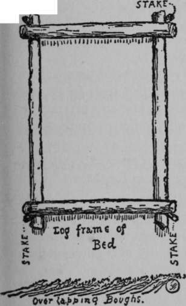

Arriving On The Camp Ground. Continued
Description
This section is from the book "The Book Of Woodcraft", by Ernest Thompson Seton. Also available from Amazon: The Book of Woodcraft.
Arriving On The Camp Ground. Continued
At one side of the ring in a conspicuous place should be the throne of the Chief (p. 457); close by this a desk and seat for the Tally Keeper and on the desk should be a lantern holder; in the exact middle of the ring is the Council-fire, never a bonfire.
Totem Pole
Directly opposite the Chief's throne, on the outer edge of the camp, should be the Totem-pole. This I always set up as soon as possible in all permanent camps. Its purpose is, 1st, to typify the movement; 2nd, to display the Totems of all the Tribes, or bands that camp here; 3rd, to serve as a place of notice. Any document posted on the Totem-pole is considered published.
a. Totem-pole of the Sinawa Tribe (15 feet high) b. of Flying Eagles c and d from Niblack's West Coasts Indians. Eagles and Bears.
Councils
Three kinds of Councils are held in the Council Place:
1. The High Council Of The Chiefs And The Old Guides
The High Council Of The Chiefs And The Old Guides every morning at 8 o'clock, and at other times when called.
2. The General Or Common Council
The General Or Common Council of all the fellows every night from seven to nine o'clock. At this we have some business (in the awarding of honors), some campfire stunts or challenges, and a little entertainment.
3. Grand Council
This is usually held once a week. Every one comes in full Scout or Indian dress. Visitors are invited. Business except when very interesting is dispensed with, and a program of sports and amusements, chiefly for the visitors, is carefully prepared. This is "Strangers' Night" and they should be entertained, not bored.
Beds
Of all things, the camper's bed is the thing most often made wrong, and most easily made right, when one knows how; and of all things comfort at night is most essential.
Every dealer in camp outfits can produce an array of different camp beds, cots, and sleeping bags, that shows how important it is to be dry and warm when you sleep.
The simplest plan is the oldest one - two pair of blankets and waterproof undersheet on a neatly laid bed of evergreen boughs, dry leaves, or dry grass. The ideal way of laying the boughs is shown in the figure below.
When I can't get grub of the Broadway sort,
I'll fatten on camper's fare, I'll tramp all day and at night resort.
To a bed boughed down with care.
But there are few places now in eastern America where you are allowed to cut boughs freely. In any case you cannot take the bough bed with you when you move, and it takes too much time to make at each camp.
Sleeping bags I gave up long ago. They are too difficult to air, or to adjust to different temperatures.
Rubber beds are luxurious, but heavy for a pack outfit, and in cold weather they need thick blankets over them, otherwise they are too cool.
So the one ideal bed for the camper, light, comfortable, and of wildwood stuff, is the Indian or willow bed, described on p 471.
Water, Or The Indian Well
If there is swamp or pond, but no pure water at hand, you can dig an Indian well in half an hour. This is simply a hole about 18 inches across and down about 6 inches below water-level, a few paces from the pond. Bail it out quickly; let it fill again, bail it a second time, and the third time it fills, it will be full of filtered water, clear of everything except matter actually dissolved.
It is now well known that ordinary vegetable matter does not cause disease. All contamination is from animal refuse or excreta, therefore a well of this kind in a truly wild region is as safe as a spring.
Mosquitoes, Black Flies, Etc
If you are camping in mosquito or fly season, the trip may be ruined, if you are not fully prepared.
For extreme cases, use the ready-made head-nets. They are hot, but effectual. You can easily get used to the net; no man can stand the flies. In my Arctic trip of 1907, we could not have endured life without the nets. Indians and all wore them.
Of the various dopes that are used, one of the simplest and best is Colonel N. Fletcher's, given in Kephart's "book of Camping and Woodcraft":
"Pure pine tar ..... 1 oz.
Oil pennyroyal......1 oz.
Vaseline........3 ozs.
Mix cold in a mortar. If you wish, you can add 3 per cent, carbolic acid to above. Some make it 1 1/2 ozs. tar".
6:30 A. m. | Turn out, bathe, etc. |
7:00 | Breakfast. |
8:00 | Air bedding in sun, if possible |
8:15 | High Council of Leaders. |
9:00 | Scouting games and practice. |
11:00 | Swimming. |
12:00 m. | Dinner. |
1:00 p.m. | Talk by leader. |
2:00 | Games, etc. |
6:00 | Supper. |
7:00 | Evening Council. |
10:00 | Lights out. |
Sometimes High Council for a few minutes instead of in the morning. |
Campfires
The day Columbus landed (probably) the natives remarked; "white man fool, make big fire, can't go near; Indian make little fire and sit happy".
Most drug shops keep ready-made dopes under such names as Citronella, Repellene, Lollakapop, etc.
Continue to:
Tags
bookdome.com, books, online, free, old, antique, new, read, browse, download